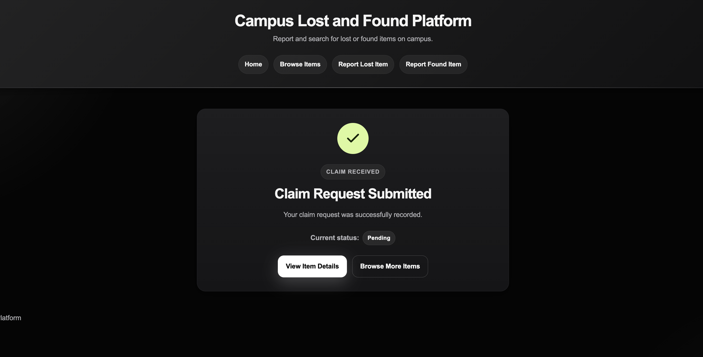

CP3407 Advanced Software Engineering
Final Delivered Solution
The Campus Lost and Found Platform is a web application designed to help students report lost items, report found items, browse available records, search and filter items, and submit ownership claims for found property.
The platform improves campus lost-and-found management through a simple and user-friendly interface supported by a Flask backend and MySQL database.
US08 Track Claim Status, US09 Review Claim Requests, US10 Update Item Status, and US11 View My Reports are deferred. Runtime uploads are excluded from new Git tracking by the repository ignore rules.
The delivered story list reflects current source and automated tests. Historical planning and manual-evidence limitations are documented separately. US08-US11 were not implemented and therefore are not shown as completed.
Current project-management evidence: final Iteration 3 Board. This image is linked rather than embedded because it contains GitHub account and contributor-avatar context.
The repository contains selected interface evidence for the delivered workflow. The current dedicated Claim Request Submitted page is recorded below.
Open the dedicated Claim Request Submitted page evidence

Older tracked UI screenshots are not embedded on this public-facing entry page because they contain phone numbers, names, local paths, browser-profile context, or other unnecessary personal data. Replace or redact them before public submission; the files remain preserved as historical repository evidence.
Tracked historical UI evidence (privacy review required before publication):
After a valid claim is stored, the application redirects to a dedicated Claim Request Submitted page showing Pending status, View Item Details, and Browse More Items.
Testing evidence records current automated behaviour and selected historical manual Flask/MySQL checks; its limits are stated in the linked testing report.
The current complete automated regression screenshot records 21 collected, 21 passed, and 0 failed. Automated database interactions use fake or mocked connections; manual system evidence uses the running Flask application and MySQL where recorded.
The final regression screenshot is linked rather than embedded because it shows local terminal identity and device context.
The tracked RED/GREEN terminal screenshots are also omitted here because they show local account, path, test-data, or development-tool context. Their evidence status and replacement needs are documented in the testing report.
Tracked historical testing evidence (privacy review required):
The delivered scope is US01-US07. US08 Track Claim Status, US09 Review Claim Requests, US10 Update Item Status, and US11 View My Reports are deferred.
GitHub Repository:
https://github.com/ZhihaoTang615/campus-lost-and-found-platform
Repository-recorded documentation URL (availability not independently verified):
https://zhihaotang615.github.io/campus-lost-and-found-platform/
GitHub Pages hosts project documentation; it is not a public deployment of the Flask/MySQL application.
The final delivered baseline supports reporting, browsing, searching, filtering, viewing, photographing, and claiming lost-and-found items. Current source and automated tests support US01-US07. Selected historical manual evidence records MySQL persistence; deferred scope and unresolved evidence gaps remain explicit.
{kind=link}
{kind=link}
{kind=link}
{kind=link}
{kind=link}
{kind=link}
{kind=link}
{kind=link}
{kind=link}
{kind=link}
{kind=link}
{kind=link}
{kind=link}
{kind=link}